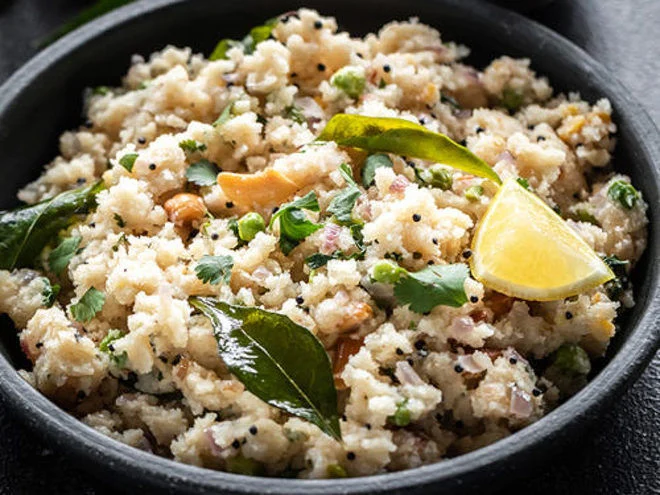

Upma Recipe | Rava Upma | Suji Ka Upma

By Bhimashankar Bhosle
Upma is a savory South Indian breakfast dish made with cream of wheat(sooji or rava).it is also known as Rava Upma.
This upma recipe makes for a really flavorful and tasty breakfast.
| Duration |
Prep Time
15 min |
Cook time
15 min |
Total time
30 min |
| cook |
Cuisine
Indian, South Indian |
Course
Breakfast, Brunch |
Deit
Vegetarian |
Difficulty Level
Easy |
Ingredients
- 1 cup rava -finer variety(sooji or cream of wheat or semolina
- 2 tablespoons Ghee
- 1 teaspoon mustard seeds
- 1/2 teaspoon cumin seeds
- 1 teaspoon chana dal,urad dal
- 10 to 12 cashews
- 1/3 cup finely chopped onions
- 1 teaspoon chooped green chilli or chopped ginger
- 2.5 cups water
- salt as required
- 1 to 2 teaspoons suger
Instructions
- Preparation
- Finaly chop 1 medium sized onion, 1 to 2 green chillies and 1 inch ginger and some coriander leaves.
- Also set aside the remaining ingredients.
- Roasting Rava
- Heat a pan or kadai first.add rava or crean of wheat.
- Being to roast the rava . stir often while roasting the rava.
- the rava or sooji grains should become fragrant and start to look dry , separete and crisp.
- swith off the flame and then add the roasted rava in aplate and keep aside
- Frying And Sauteing
- In a pan ,heat ghee or oil.add the mustard seeds.
- When you hear the crackling sound of mustard seeds ,it means they are getting fried
- Now add the ½ teaspoon cumin seeds along with 1 teaspoon chana dal (husked and split bengal gram) and 1 teaspoon urad dal (husked and split black gram).
- Stirring often fry until the chana dal and urad dal begin to brown a bit.
- Immediately add 10 to 12 cashews and begin to fry on a low to medium-low heat.
- Now add the finely chopped onions. Sauté the onions until they soften and become translucent on a low to medium-low heat.
- Then add the chopped green chillies, ginger and curry leaves. You can also add 1 dried red chilli at this step.
- Boiling Water
- Then add 2.5 cups water to this mixture.Add salt as required. Mix well and check the taste of water. It should be a bit salty but not too much.
- Then add 1 teaspoon sugar. Sugar is optional and you can skip it. We prefer a slight sweet taste in the upma and hence we add it.
- Stir again. On a medium to high flame, heat the water and let it come to a rolling boiling.
- Making Upma
- When the water comes to a rolling boil, lower the flame to its lowest. Then add the rava in 4 to 5 batches with a spoon.
- Once you add the first batch of rava, stir and mix immediately so that the roasted rava gets mixed evenly with the water.
- Then add the next batch of rava. Mix and stir again very well ensuring that the batch of rava is mixed evenly in water.
- Continue to add and stir the rava up to the last batch. Quickly stir and mix very well. The rava grains will absorb water, swell and get cooked.
- Cover and allow the rava upma to steam for 2 to 3 minutes on a low heat.
- Then switch off the heat. In the below photo, the rava is cooked well and the suji ka upma is ready.
- Lastly add about 2 tablespoons chopped coriander leaves (cilantro). You can add more coriander leaves if you like.
- Mix again.Serve upma hot or warm with slices of lemon or a side of lemon pickle or coconut chutney. You can opt to drizzle half to one teaspoon of ghee while serving. If you like you can garnish with some coriander leaves.
Food Questionnaire